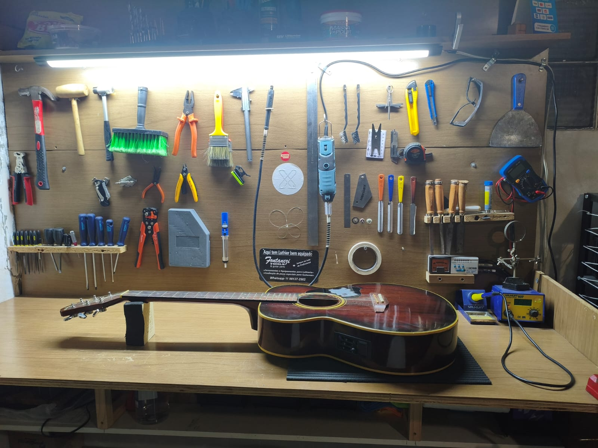
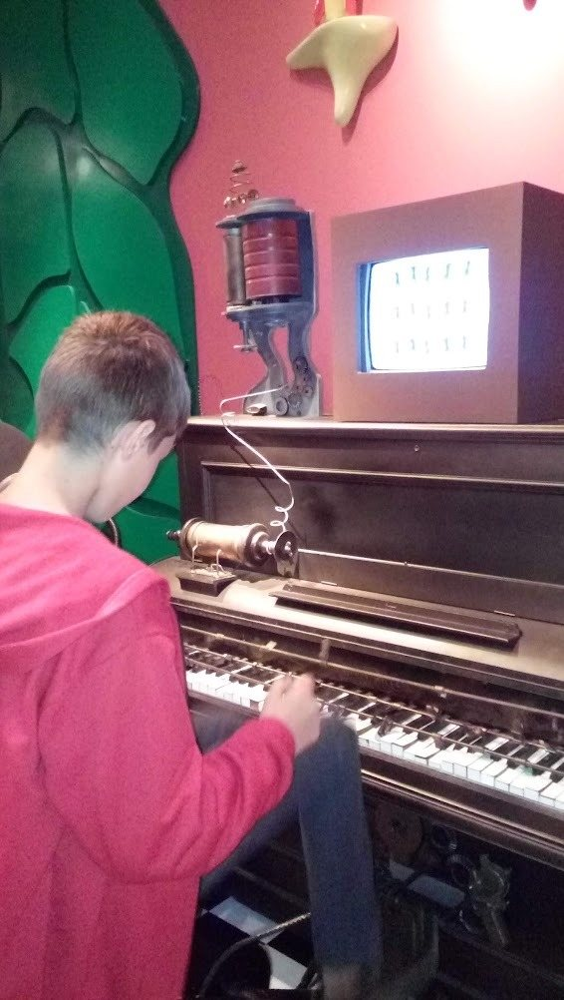
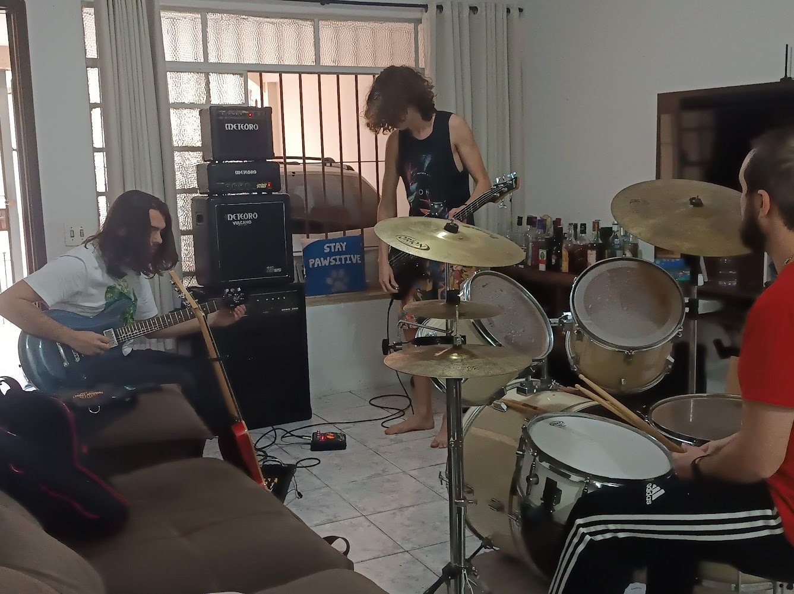

RegulagemElétricaRefretBlindagemPinturaFretlessEscudoNut e rastilhoRegulagemElétricaRefretBlindagemPinturaFretlessEscudoNut e rastilho
01 — Sobre
Oficina na Chácara Santo Antônio.
Sou Hugo Brandão. Atendo violão de nylon e de aço, guitarra e baixo. O diagnóstico e o prazo saem antes do serviço.

02 — Minha história
Uma paixão que começou com um violão e se transformou em propósito.
A história da Brandão Luthieria começa muito antes da oficina. Começa na infância de Hugo, em uma família onde a música sempre esteve presente.
Seu avô, apaixonado por música sertaneja de raiz, moda de viola e pelos grandes clássicos, foi uma de suas primeiras referências musicais. Desde muito pequeno, Hugo cresceu cercado por música e desenvolveu, naturalmente, uma conexão especial com os instrumentos.
O primeiro violão
Por volta dos 8 anos, ganhou de um tio muito querido o seu primeiro violão. Foi o começo de uma história que nunca mais parou.
Sua mãe o colocou em aulas particulares para aprender a tocar e, junto com alguns amigos que também estavam descobrindo a música, ele começou a mergulhar cada vez mais nesse universo.
O violão deixou de ser apenas um instrumento. Tornou-se parte da sua vida.
O músico que também gostava de construir e consertar
Desde criança, Hugo sempre teve facilidade e curiosidade para entender como as coisas funcionavam. Gostava de consertar, montar, desmontar e criar — especialmente quando envolvia trabalhos manuais e marcenaria.
Na adolescência, essas duas paixões começaram a se encontrar.
Por volta dos 15 anos, já morando em São Paulo, teve pela primeira vez um espaço só seu. Foi ali que começou a reunir e colecionar instrumentos e, naturalmente, passou a cuidar deles.
Trocava as próprias cordas, fazia regulagens, experimentava ajustes e, principalmente, começou a querer entender cada detalhe por trás do funcionamento de um instrumento.

A música também trouxe amigos
Ainda nessa época, Hugo entrou para uma banda de rock formada por amigos.
Em uma cidade nova, onde ainda conhecia poucas pessoas, foi através da música que encontrou novos amigos, novas experiências e um grupo com quem pudesse compartilhar aquilo que mais gostava.
A música passou a representar não apenas uma paixão, mas também uma forma de conexão com as pessoas.

Do músico ao luthier
Com o passar dos anos, a curiosidade pelos instrumentos foi crescendo.
Hugo conheceu a profissão de luthieria depois de zuar a própria guitarra e precisar de alguém para consertar, porque não sabia fazer. Foi nesse momento que ele conheceu, pela primeira vez, o que era um luthier.
Hugo começou a estudar luthieria por conta própria, através de cursos, conteúdos especializados e muita prática. Cada instrumento que passava por suas mãos se tornava uma nova oportunidade de aprender.
Foi assim, entre estudos, experiências e muitas horas de prática, que o hobby começou a ganhar forma profissional.
Hoje, seu trabalho envolve regulagem, manutenção, restauração, elétrica e customização de instrumentos, além de projetos especiais realizados em parceria com profissionais especializados.
Quando o hobby vira propósito
A Brandão Luthieria nasceu dessa trajetória.
Mais do que uma oficina, é o resultado de anos de paixão, curiosidade e dedicação aos instrumentos.
Para Hugo, cuidar de um instrumento nunca foi apenas uma obrigação profissional. É algo que ele escolhe fazer também nas horas vagas, por prazer e porque realmente gosta de entender, recuperar e devolver vida a cada instrumento que passa por suas mãos.
É esse amor pelo que faz que está presente em cada detalhe do trabalho: no cuidado, na atenção, na busca pela melhor regulagem e, principalmente, no respeito pela história que cada instrumento carrega.
Hoje
Cada instrumento que chega à Brandão Luthieria traz consigo uma história.
E a nossa missão é cuidar dessa história — seja devolvendo vida a um instrumento antigo, ajustando aquele instrumento que acompanha um músico há anos ou ajudando a transformar uma ideia em um projeto único.
Porque, para nós, instrumento musical não é apenas objeto. É parte da história de quem toca.
03 — Serviços
Regulagem, elétrica, reparo e pintura.
01
Regulagem e ajustes
Altura de cordas, tensor e oitavas
Retífica e coroamento de trastes
Altura de captadores
Troca de cordas e limpeza
02
Elétrica e circuitos
Captadores single e humbucker
Potenciômetros, chave e jack
Blindagem das cavidades
Push-pull, coil split e killswitch
03
Reparos estruturais
Colagem de braço e headstock
Rachaduras e lascas no corpo
Troca de trastes
Nut e rastilho em osso
04
Pintura e acabamento
Pintura e retoques
Polimento
Escudos sob medida
Recuperação estética
04 — Atendimento
Como funciona
01
Como funciona o atendimento
Chame no WhatsApp, diga o instrumento e o que ele precisa. A oficina recebe a peça para avaliar.
02
Como funciona o orçamento
Depois do diagnóstico, você recebe valor e prazo. O serviço só começa com o seu ok.
03
Realização do trabalho
Regulagem, reparo ou pintura saem da bancada com o instrumento pronto.
Melhor luthier que conheci! Primeiro fez toda a regulagem da minha strato 97, trocou as tarrachas que estavam velhas por tarrachas vintage, tudo ficou impecável, e depois meu violão Crafter, que tenho um grande apego, também ficou maravilhoso e novinho em folha. Das cordas sempre tops, ótimo atendimento.
★★★★★
Deixei o violão pra regular e fazer alguns reparos. Ficou excelente. Agora ele está pronto pra guerra e voltar a ativa.
★★★★★
Conheci o trabalho dele através do Google Maps e com certeza foi um acerto absurdo. Além de ser extremamente atencioso nos mínimos detalhes, o serviço foi excelente e muito rápido! Como falei com ele mesmo, já indiquei, continuarei indicando e claramente irei solicitar os serviços dele quando precisar.